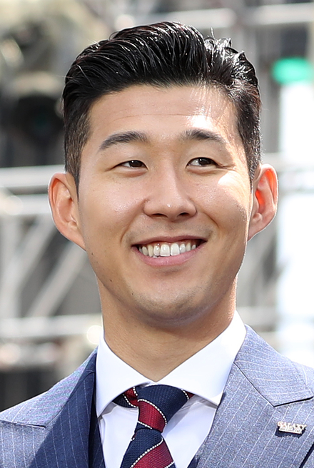

About Son
Son Heung-min is a South Korean professional footballer who plays as a forward for the Premier League club Tottenham Hotspur and captains the South Korea national team.
A picture of Sonny
A list goes here
- List 1
- List 2
- List 3
Korea
A full international since 2010, Son has represented South Korea at the 2014 and 2018 FIFA World Cups and is his country's joint top scorer in the World Cup with Park Ji-sung and Ahn Jung-hwan with three goals.